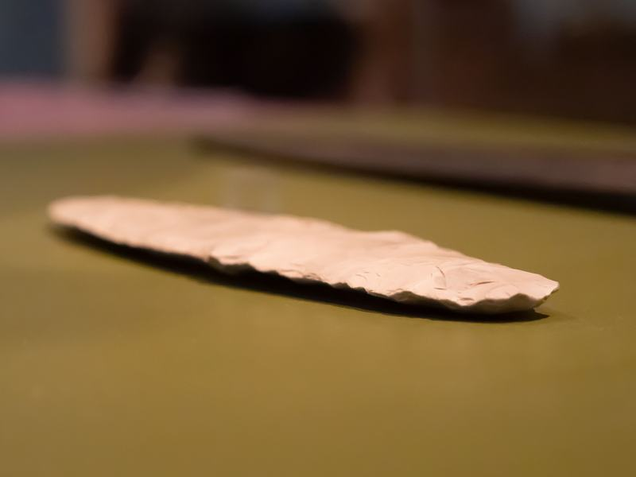
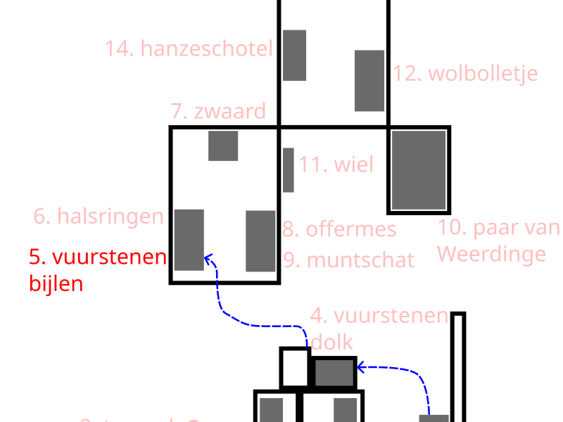

4. Vuurstenen dolk Bruinehaar-Lokbelt (bij Haaksbergen) ca. 11.000 - 3.000 v.Chr



Hier zie je een vuurstenen dolk uit Bruinehaar-Lokbelt, bij Haaksbergen. De dolk stamt uit de prehistorie en is gemaakt van lichte vuursteen, waarschijnlijk uit Noord-Duitsland of Denemarken. De bijna witte kleur en het egale oppervlak maken dit stuk extra opvallend.
De dolk is lang, dun en mooi symmetrisch. Voor het maken koos een vakman vuursteen van hoge kwaliteit, zonder scheuren of storende plekken. Daarna gebruikte hij een gewei als hulpmiddel. Een smalle pen van gewei werd tegen de steen gezet, precies op de plek waar een lang, dun stuk moest loskomen. Met een hamer van gewei of hout sloeg hij op die pen. Zo brak de vuursteen in lange, smalle stukken. Van een van die stukken maakte hij het blad van deze dolk. Vervolgens werkte hij het zorgvuldig verder bij, tot de vorm strak en gelijk was.
Zo’n vuurstenen dolk was meer dan alleen gereedschap. De zorgvuldige vorm, de bijzondere kleur en het fijne werk wijzen op een voorwerp met status. Misschien hoorde het bij iemand met aanzien, of speelde het een rol in rituelen. Het laat zien hoe hoog het niveau van vakmanschap in de prehistorie al was.
We lopen nu naar het huisje Pracht en praal waar een aantal van de mooiste vondsten uit Twente en Oost Nederland zijn tentoongesteld.
Het volgende luisterpunt gaat over de drie grote vuurstenen bijlen uit Collendoorn bij Hardenberg.